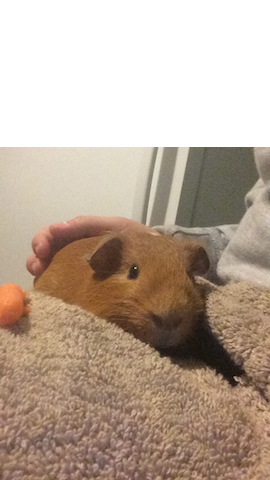
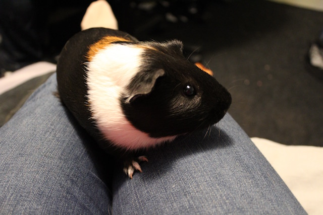
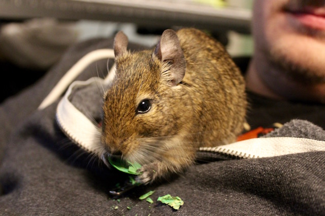
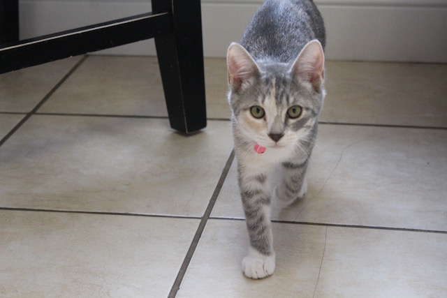
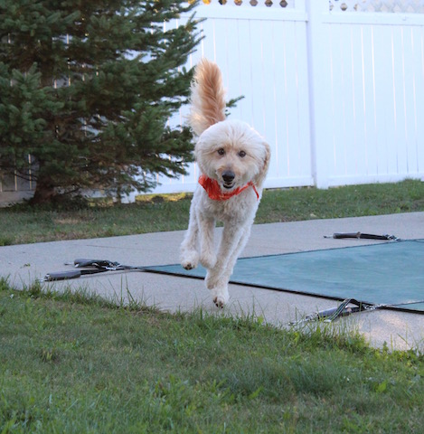
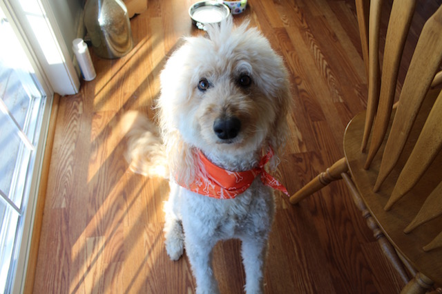

I like to take pictures sometimes, mostly of my pets.
This is Zeus. He is my first piggy. He loves carrots and cuddling.
This is Hades. He does not like people very much and is very anti-social, but I love him anyway.
This is Dante. He is a five year old Degu, which is kind of like a smaller version of a Chinchilla.
He's probably the coolest rodent I've ever seen.
This is Luci. She's a rescue kitty from the Bangor Humane Society. She's a princess.
This is Riley. He is a 7 year old Goldendoodle and the kindest, cuddliest dog you could ever meet.
Return to Home